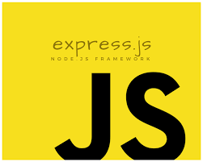
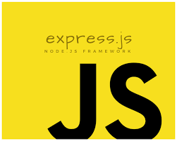

A Front-End Developer is someone who creates websites and web applications. The difference between Front-End and Back-End is that Front-End refers to how a web page looks, while back-end refers to how it works. You can think of Front-End as client-side and Back-End as server-side.


A Back-end Development is the development of the client-side (server-side) of the application. This process involves knowledge of APIs, databases, servers, and apps. APIs play a major role in backend development,it takes care of fetching the data from the backend and passing it to the frontend.


A Back-end Development is the development of the client-side (server-side) of the application. This process involves knowledge of APIs, databases, servers, and apps. APIs play a major role in backend development,it takes care of fetching the data from the backend and passing it to the frontend.
 


The MEAN stack is a JavaScript-based framework for developing scalable web applications. The term MEAN is an acronym for MongoDB, Express, Angular, and Node — the four key technologies that make up the layers of the technology stack..